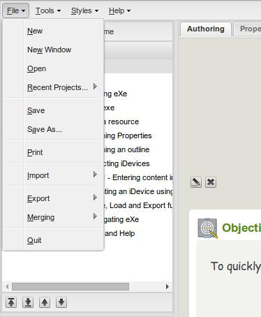

EXE SIDEBAR
Located at the far left of the screen is the eXe sidebar containing the Outline and iDevice panes.
This basic tool set allows users to develop the structure or outline for a project design and produce
learning content using the iDevice tools.
eXeTutorial
Section 6 - Navigating eXeLearning
MENUS AND TOOLBARS
Menu Bar
Menu Bar

The eXe Menu bar provides a range of global functionality that can be applied to the content as it is being built.
Outline Pane and title nodes
The node buttons allow you manage how your learning material will be structured e.g. chapters, sections, sub-sections etc.
These buttons allow you to move nodes.
IDEVICE TOOLS
Each iDevice comes with a standard set of iDevice controls. These controls are described in detail below.
Green check mark
Each time you enter content into a field you must click on the check mark to record and activate the content in the iDevice.
Blue arcing arrow
By clicking on the blue arrow you will undo your recent edits and discard any new content entered.
Red X
By clicking on the red X you will delete the iDevice and any content entered.
Up and down arrows
The up and down arrows allow you to change the order of the iDevices displayed on your screen.
Move To dropdown menu
You can move iDevices containing content between and within nodes. This is done by opening the drop down menu and selecting the node you wish to move it to.
Edit iDevice
The page and pencil icon that appears in preview mode beneath each iDevice enables you to edit that particular iDevice. This is done by clicking on the icon which opens the iDevice in edit mode.
Green check mark
Each time you enter content into a field you must click on the check mark to record and activate the content in the iDevice.
Blue arcing arrow
By clicking on the blue arrow you will undo your recent edits and discard any new content entered.
Red X
By clicking on the red X you will delete the iDevice and any content entered.
Up and down arrows
The up and down arrows allow you to change the order of the iDevices displayed on your screen.
Move To dropdown menu
You can move iDevices containing content between and within nodes. This is done by opening the drop down menu and selecting the node you wish to move it to.
Edit iDevice
The page and pencil icon that appears in preview mode beneath each iDevice enables you to edit that particular iDevice. This is done by clicking on the icon which opens the iDevice in edit mode.
Licensed under the Creative Commons Attribution Share Alike License 4.0